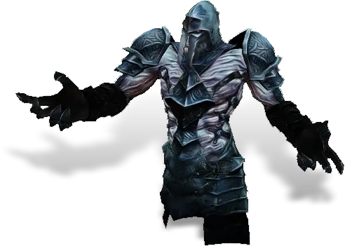

Открыть в интерактивной вики →

| Уровень | лёгк. 65 / норм. 80 / тяжел. 100 |
|---|---|
| Зоны атаки | , дальняя, ментальная |
| Шанс дропа 100% — уровни | лёгк. 1-55 / норм. 1-55 / тяжел. 1-75 |
| Шанс дропа 90% — уровни | лёгк. 56-70 / норм. 56-70 / тяжел. 76-90 |
| Шанс дропа 70% — уровни | лёгк. 71+ / норм. 71+ / тяжел. 91+ |
| Группа боссов | Страх |
| Сила (PvE) | лёгк. 2385 / норм. 4467 / тяжел. 6708 |
| Аспект арены | Farao |
| Здоровье | лёгк. 14 000 / норм. 28 000 / тяжел. 50 000 |
| Мана | 8000 |
| Выносливость | 8000 |
Навыки


Дроп


Требования для входа
тяжел.:  Путь страха
Путь страха
Путь страхаПуть по картам
Статистика
 |  |  | |||
| Уровень: 65 | Уровень: 80 | Уровень: 100 | |||
Здоровье: 14 000 Мана: 8 000 Выносливость: 8 000 | Здоровье: 28 000 Мана: 8 000 Выносливость: 8 000 | Здоровье: 50 000 Мана: 8 000 Выносливость: 8 000 |
Умения
| Буря Шаровая молния Молния | Теневая аура Энергетическое шило Удар в живот Отупление Булавка в глаз Явление смерти Укол Куклы Отравление |
Иммунитеты / особые умения
-
Команда
-
Локация
Корабль Командора